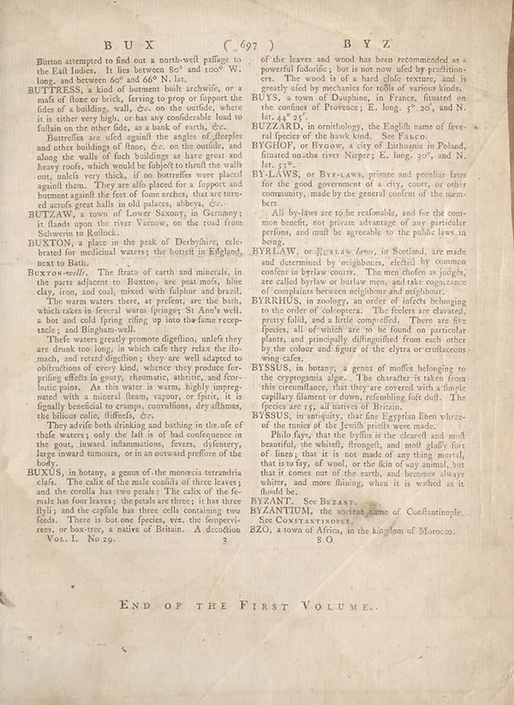

page-2250-75315f455009.jpg

Page ID: britannica:309f765b1ecc83e0a7f7762e44b4a927a7555443:train:2250
Running head:
Image SHA-256: 75315f45500988daa37cc73e58bee8b227772229b576475ee23ddb584172baee

(untitled) [?]
Button attempted to find out a north-well pallage to the Call Indies. It lies between 80° and 100° W, long, and between 60° and 60° N. lat.
BUTTRESS [Text]
BUTTRESS, a kind of batment built archwife, or a mals of flouse or birds, ferving to prop of flapper the fides of a building, wall, 6e, on the outside, where it is either very high, or has any considerable load to fultain on the other fide, as a bank of earth, eC Butteflies are used against the angles of fleeples and other buildings of flone, 6e, on the confiile, and along the walls of fuch buildings at have great and heavy roofs, which would be subject to shrull the walls once, unless very thick, if no butteffes were placed againft them. They are also placed for a lupport and bammer against the feet of fine arches, that are turned around great halls in old palaces, abbys, cz.
Matched article: Flying buttress (Wikipedia, revision 1347813338, re-rank score -5.5) · comparison
BUTZAW [Text]
BUTZAW, a town of Lower Saxony, in Germany; it floods upon the river Varnow, on the road from Sehaven to Rolloek.
BUXTON [Text]
BUXTON, a place in the peak of Derbyhires; celebrated for medicinal waters; the bottelt in England, next to Bath. Buxcoow-will. The frats of earth and minerals, in the parts adjacent to Buxton, are peat-mols, blue clay, iron, and coal, mixed with filpular and brazzl. The warm waters there, as preferers are the ban, which takes in federal water-franges; St Am’s well, a hot and cold spring riding up into the fame receptele, and Ilgham-well. Thefe waters greatly promote digestion, unief they are drunk too long; in which cell they relax the flo- made, and reared digestion; they are well adapted to obstructions of every kind, whence they produce fur- grilling effects in gouy, rheumatic, athrire, and feor- butic pains. As this water as warn, highly impregnated with a mineral foam, vapoon, or finite, it is figally beneficial to crampt, convilions, dry affthmas, the biluso colis, liftedly, cz. They advirle both drinking and bathing in the ule of thute waters is only the left is of bad consequence in the gout, inward inflammations, fevers, dyfentery, large inward tumours, or in an outward preflure of the body.
Matched article: Buxton (Wikipedia, revision 1347769028, re-rank score -2.923828125) · comparison
BUXUS [Text]
BUXUS, in botany, a genus of the monocina terrandia elids. The calix of the male coaffins of three leaves; and the crotilla has two petals: The calix of the fo- male has four leaves; the petals are three; it has three flyily, and the copfila has three cells containing two feeds. There is but one species, viz, the fampevi-rens, or box-tree, a native of Britain. A decdition Vol. 1. No 29. of the leaves and wood has been recommended as a powerful fiducifie; but is not now used by prestitioners. The wood is of a hard clole texture, and is greatly used by mechanics for toßls of various kinds. BUS', a town of Daughane, in France, situated on the confined Florence; E. long, 3° 20, and N. lat. 44° 25°.
BUZZARD [Text]
BUZZARD, in anthology, the English name of fever-ral species of the hawk kind. See Paxo.
Matched article: Buzzard (Wikipedia, revision 1349314537, re-rank score -5.1484375) · comparison
BYGHOF [Text]
BYGHOF, or BYGow, a city of Lithuania in Poland, firstured on the river Niper; E. long, 30°, and N. lat. 32°.
BYLAWS [Text]
BYLAWS, or ByrŁLAWS, private and peculiar laws for the good government of a city, court, or other community, made by the general content of the mem-bers. All by-laws are to be reafonable, and for the com-mon benefit, not private advantage of any particular prefers, and mult be agreeable to the public laws in bang.
Matched article: By-law (Wikipedia, revision 1340885393, re-rank score -5.12890625) · comparison
BYRLAW [Text]
BYRLAW, or ŁyrŁLAW laws, in Scotland, are made and determined by neighbours, elected by common conferin byterw courts. The man chaden in judges are called byrlaw or burlaw men, and take cognizance of complaints between neighbors and neighbors.
BYRHUS [Text]
BYRHUS, in zodogy, an order of infects belonging to the order of coloroptera. The feelers are clavated, pretty folkl, and a little compelled. These are five species, all of which are to be found on particular plants and principally disfiguplified from each other by the colour and figure of the clytra or cruttaccous wing cases.
BYSUS [Text]
BYSUS, in botany, a genus of molltes belonging to the cryptogania alge. The character is taken from this reconnillacs, that they are covered with a female capillary filament or down, refonishing fat duft. The feeices are 15; all natives of Britain.
BYSSSUS [Text]
BYSSSUS, in antiquity, that fine Egyptian then whirco- of the tunes of the jewith prints we make. Pulio Rey, that the byllas is the clearelt and moft beautiful, the whistel, froongel, and molt glolly fore of linesy that it is not made of any thing mortal, that is softy, of wool, or the skin of way animal, but that it comes out of the earth, and becomes always white, and more thinning, when it is waffed as it fluid he.
BYZANT [Text]
BYZANT. See BEZANT.
Matched article: Viliam Loviška (Wikipedia, revision 1350170086, re-rank score -4.59375) · comparison
BYZANTIUM [Text]
BYZANTIUM, the ancient name of Confiantinople. See COMPENTINORY.
Matched article: Byzantium (Wikipedia, revision 1353747147, re-rank score -3.375) · comparison
BZO [Text]
BZO, a town of Africa, in the kingdom of Morocco.
Matched article: BZO (Wikipedia, revision 877681291, re-rank score -4.7890625) · comparison